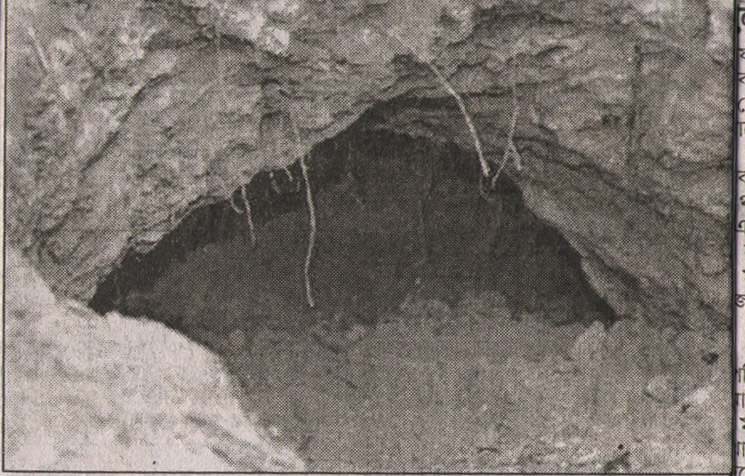

The Oppressed Minorities
By Professor Ajoy K. Roy
About the Author:
Prof. Ajoy K. Roy, a reputed scientist of high esteem, studied in Bangladesh and in UK and took his Ph.D. in Physical Chemistry from Leeds University. With his initiative an advanced center of Solid State Physics and crystallography was established in 1969 under the sponsorship of UNESCO. His work led to the discovery of some fundamental process in radiation chemistry of aliphatic and amino acids and their salts. The process of dissociative electron capture and the subsequent fate of electron is considered to be his major contribution as a scientist. He has been invited twice by the Nobel committee to nominate candidates for Nobel prize in 1998 and in 2001.
Socially conscious Prof. Roy, since his student life, participated in all progressive movements including Language movement of 1952, Mass Movement in 1969, and Non Co-operation movement of 1970 --all these finally culminated in his participation in the 1971 War of Liberation of Bangladesh as a freedom fighter. After Liberation Prof. Roy was the General Secretary of the Asiatic Society of Bangladesh in the 1972-73 period, succeeding Dr. Ahmed Sharif.
Prof. Roy, as a secular democrat believes in rationalism and secularism. As an ardent activist of Human Rights he has participated in most movements against Human Rights violation in Bangladesh.
Bicharer Bani Nirabe Nivrite Kande:
Subject Name/Email Date 11630 Bicharer Bani Nirabe Nivrite Kande:Bhola on the news again: Is it a Dr. Ajoy Roy Thu 6/12/2003 11472 Bicharer Bani Nirabe Nivrite Kande: Tale of Biva of Bagerhat Dr. Ajoy Roy Thu 5/29/2003 11421 Bicharer Bani Nirabe Nivrite Kande: En masse raping followed by kill Dr. Ajoy Roy Sun 5/25/2003 11367 Bicharer Bani Nirabe Nivrite Kande: Tale of little Mina Dr. Ajoy Roy Wed 5/21/2003 11348 Bicharer Bani Nirabe Nivrite Kande: Agonies of Faridpur-Adibashis: A Dr. Ajoy Roy Tue 5/20/2003 11322 Bicharer Bani Nirabe Nivrite Kande: Tale of a Purohit Kanya Part II Dr. Ajoy Roy Sun 5/18/2003 11214 Bicharer Bani Nirabe Nivrite Kande: Tale of a minor Hindu girl, daug Dr. Ajoy Roy Tue 5/13/2003 11147 Bicharer Bani Nirabe Nivrite Kande: Swapna another unfortunate girl Dr. Ajoy Roy Fri 5/9/2003 11141 Bicharer Bani Nirabe Nivrite Kande: Rezina an unfortunate girl Dr. Ajoy Roy Fri 5/9/2003
Buddhist Monk Killed by BNP cadres:
 |
Attempt is being made to divert the course of killing of Buddhist monk at Raozan. For this purpose a new story behind the killing has been fabricated- i.e. the police is trying to establish that real reason behind the killing is land dispute. However, according to his first FIR, Sulal Barua alleged that BNP cadres belonging to S. K. Choudhury faction c., ... ....(Read more) |
"Annada Prasad" Cries in Silence & Anguish
 |
Bhola a remote district from the capital surrounded by on all sides rivers and riverines, on the south lies the Bay of Bengal, is made of coastal plain land not much above 5 ft from sea level. On the eastern side the mighty Meghna flows into Bay, whereas on the north and western side river Tetulia, a branch of Meghna falls into Bay. From this point of view it is an island floating on the bay.The district administration extends main Bhola and a few islands (chars) including Rajapur, Gangapur, Charpatila, ....(Read more) |
Kashinagar - "The cave"
|  |
This is a sad story of torture on women in caves prepared under earth. A group of about twenty miscreants of the locality called Kashinagar excavated the cave on the barrage of a river along its bank. A reign of terror has been unleashed by juvenile group of terrorists in Kashinagar union under Chauddagram upazila in the district of Comilla. This reminds me the dreadful days of Pakistani occupation period in 1971. The Pakistani barbarians in uniform were entrenched along the border areas. The trenches were well fortified- they look like foxholes from outside. ....(Read more) |
Repression on minor girls continues: This time a Jamat leader is involved
BD Election: Fall of Awami League: An Election Analysis :
 |
Here is an article on BD election (Part I) based on my own personal observation and experience. You will be horrified to learn the extent of terrorist and anti-social activities directed against a religious minority community. In here I have described the pre election events, in part II will follow the story of post election.A landslide victory of Bangladesh National Party (BNP) & 4-Party alliance led by Begum Khaleda in the general election ... ....(Read more) |
1971 :
Homage to my martyr colleagues:
 |
Fourteenth December is known to us as "Shahid Budhijibi Dibas" (Martyr Intellectual Day). I am not sure if the word "Martyr" is the exact equivalent to "Shahid". I think the word Shahid carries much more deeper feeling and intensive sense that touches heart. We shall, who had even remote touch with war of liberation for our motherland, Bangladesh or with those days of 69 - 71, the days of movement for autonomy, ..... ....(Read more) |
Remembering 25th March: Darkest Night of Our National History :
 |
Yes, it is the darkest night of our national history. 25th March of 1971, just a day before our National day, the day of independence, is still a painful day in my memory. The events, history's most heinous crime committed by the Pakistani army on the night of the 25th March, still haunt me. I had the rarest opportunity to go through the fearful and horrible experience of glimpses of a genocide.... ....(Read more) |
Personality:
|
Introducing Shahriar Kabir - A humanist |
||||||
|
||||||
Comrade Ila Mitra:
A tribute By Dr.
Ajoy Roy
 |
Ila Mitra, the legendary peasant leader of undivided Bengal, a veteran leader of the communist movement in the sub-continent, a dedicated friend to the cause of our war of liberation in 1971, breathed her last in Kolakata (Calcutta) on Sunday, 13th October afternoon at PG hospital, Kolkata (Calcutta), West Bengal. It was learnt from ETV-Calcutta TV channel that following a severe heart attack some time back she had been under treatment in the PG hospital. .... (Read more) |
Others:
A Letter To Shabnam Nadiya
|
Dear Nadiya, As you know, I am just a curious occasional reader of Mukto-Mona group to which my son Avijit introduced me. Sorry for late reaction on your touchy article 'Why I remain an Atheist' which grew out of your bitter personal experience. How I appreciate your feelings, sensitiveness and frankness. ... ....(Read more)
|
| Replies | Author | Date | |
| 1337 | Re:
Attn : Shabnam Nadiya - From Dr. Ajoy Roy |
Abul Kasem | |
| 1353 | Re: Attn : Shabnam Nadiya - From Dr. Ajoy Roy | Satya Sondhani | |
| 1374 | Re:
Attn : Shabnam Nadiya - From Dr. Ajoy Roy |
Bishnu Dey | |
| 1406 | Re: Attn : Shabnam Nadiya - From Dr. Ajoy Roy | Satya Sondhani | |
| 1379 | Re: Attn : Shabnam Nadiya - From Dr. Ajoy Roy | Javacrucian | |
| 1386 | Re: Attn : Shabnam Nadiya - From Dr. Ajoy Roy | Avijit Roy | |
| 1416 | Re: Attn : Shabnam Nadiya - From Dr. Ajoy Roy | aparthib |
|
Visit : https://gold.mukto-mona.com |
© Copyright Mukto-mona. All rights reserved.